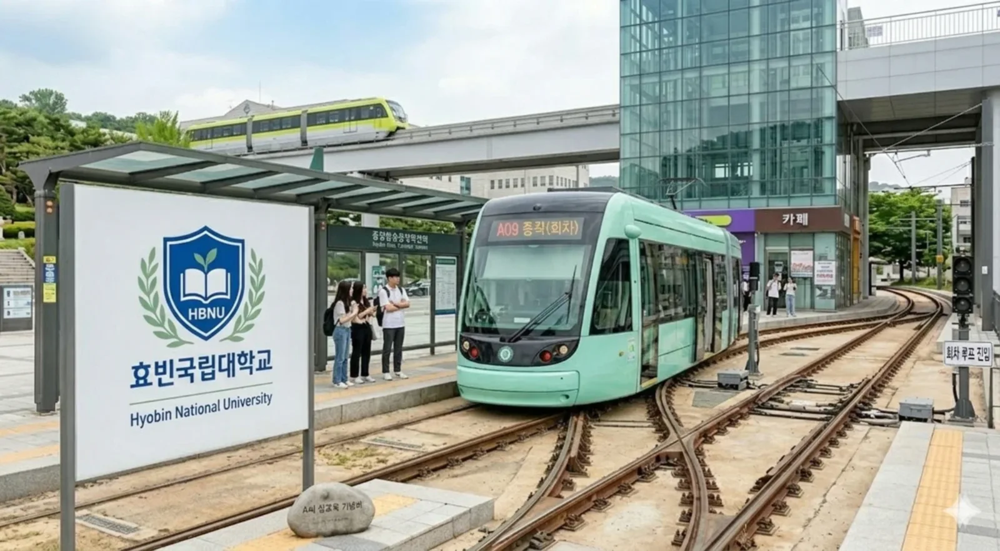
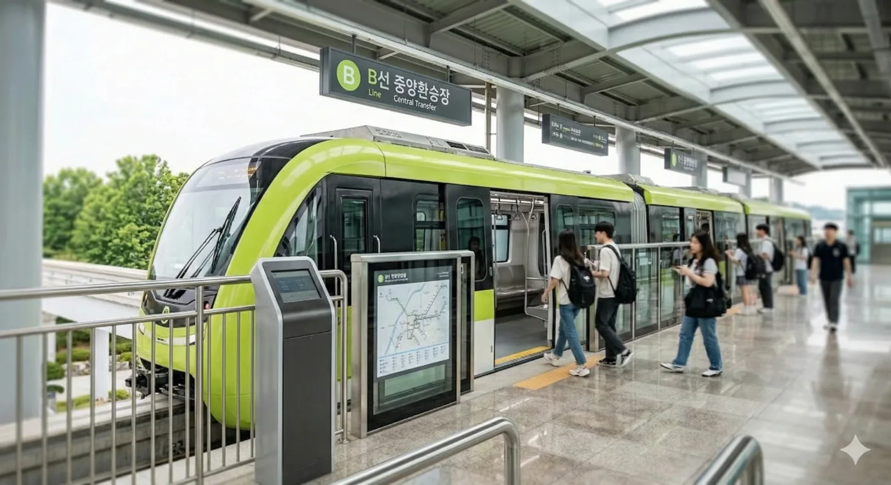

효빈대학교 캠퍼스의 정중앙에 위치한 교통의 핵심 요충지. 교내를 순환하는 A선(트램)의 종점이자 B선(모노레일)의 환승역이다.
캠퍼스가 워낙 넓은 탓에 대부분의 학생이 이곳을 거쳐 간다고 해도 과언이 아니다. 셔틀버스 정류장, 택시 승강장, 공유 킥보드 주차장까지 모두 모여 있는 거대한 허브(Hub)다.
지상 1층에는 트램(A선) 승강장이, 지상 3층에는 모노레일(B선) 승강장이 위치한다. 두 노선 간의 환승은 에스컬레이터로 연결되어 있어 편리하다.
"만남의 광장" 역할을 하기도 한다. 물론 헤어진 CC들이 마주쳐서 갑분싸가 되는 장소이기도 하다.
역 구내에는 편의점, 카페, 그리고 그 유명한 델리만쥬 가게가 있어 배고픈 학생들을 유혹한다.

A선 승강장 전경
| 단선 승강장 |
| 상행 효빈대 A선 : 대학본부 · 효빈대병원 · 수의대 방면 |
| 단선 승강장 |

B선 승강장 전경 (모노레일)
| 상대식 승강장 | |
| 순환 효빈대 B선 : 예술대 · 자연대 · 베르데홀 방면 | 종착 당역 종착 |
| 상대식 승강장 | |
2022년 6월, 박효빈 시장 당선 직후 "9.99% 지지자"였던 부동산학과 A씨가 이곳 중앙환승장 광장에서 확성기를 들고 난동을 부린 사건.
약 420m의 짧지 않은 구간 동안 대학생들의 지갑과 위장을 저격하는 알짜배기 점포들이 빽빽하게 들어차 있다.